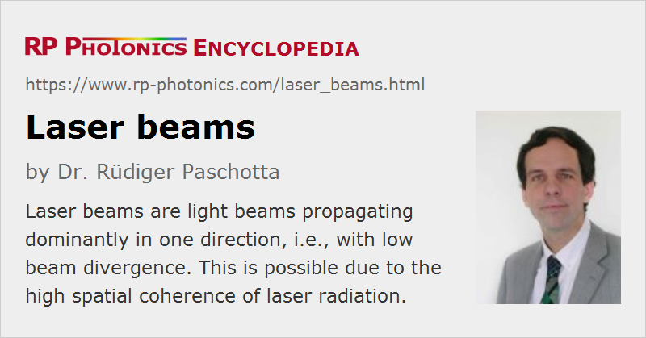

Laser Beams
Definition: light beams propagating dominantly in one direction
More general term: light beams
More specific terms: collimated beams, Gaussian beams, diffraction-limited beams, flat-top beams
German: Laserstrahlen
Categories: general optics, lasers
How to cite the article; suggest additional literature
Author: Dr. Rüdiger Paschotta
In most cases, a laser emits light in the form of a well directed laser beam. This means that the light dominantly propagates in a certain direction, typically with most of the optical power concentrated to a small area of the order of a square millimeter.
Laser beams are often close to Gaussian beams, where the transverse profile of the optical intensity can be described with a Gaussian function, the width of which varies along the propagation direction.

Generally, laser beams exhibit a high degree of spatial coherence, which is related to a high beam quality. As a result, one obtains good focusability and the potential to form collimated beams with very low beam divergence.
When a laser beam hits some object (for example a workpiece in laser material processing), the arriving optical intensity is also called the irradiance.
The propagation of Gaussian beams can be calculated with a set of relatively simple equations. In cases with non-ideal beam quality, one can use a generalized set of equations which also involves the so-called beam quality factor M2. In this case, the equations cannot predict the detailed evolution of beam profile, but only of the beam radius based on the second moment of the intensity profile (D4σ method).
Laser light often have a small optical bandwidth, so that the temporal coherence is also high. An often unwanted consequence of the high level of coherence is the tendency to form laser speckle patterns.
The optical power of a laser beam may hardly change during propagation in a transparent medium, or quickly decay in an absorbing or scattering medium. Inhomogeneous media (i.e., media with a locally varying refractive index) can also distort the shapes of laser beams. This can happen due to e.g. thermal effects such as thermal lensing in a gain medium.
Some lasers emit continuously, but a laser beam can also consist of a fast sequence of pulses, with many millions or even billions of pulses per second (→ pulse repetition rate). The light distribution may then be described as a regular sequence of a kind of “light bullets”.
Laser light is often linearly polarized, i.e., the electric field oscillates in a certain direction perpendicular to the propagation direction. Some lasers, however, emit light with an undefined, fluctuating polarization state.
A laser beam of visible light with sufficiently high power may be visible when propagating in air. This is because a tiny portion of the optical power is scattered by dust particles and/or density fluctuations in the air and can therefore reach the observing eye. When the laser beam hits some diffusely scattering object, such as a white screen, a much brighter spot is seen on that screen, since most of the optical power is scattered at this point.
Near Field and Far Field of Laser Beams
The near field is understood to be the region around the beam waist (focus). The far field concerns the profile far from the waist, i.e., in a distance from the focus which is large compared with the effective Rayleigh length. The far field intensity profile reveals details of the beam divergence, which in the near field can be obtained only with wavefront measurements. As it is often not practical to access the far field directly, one may use a focusing lens (or mirror) to obtain an intensity profile in its focal plane which reveals a scaled-down version of the far field pattern.
Limitations for the Focusing of Laser Beams
Laser beams can be used for transmitting optical energy to rather small spots or with low divergence over large distances. However, there are limitations to this, which involve the optical wavelength, the beam quality and the transverse size of the used focusing or collimation optics. Some of these limitations are discussed in the following, always assuming propagation of the beam through a homogeneous medium (i.e., with no added beam distortions on the way).
If a laser beam is focused to a spot (beam waist) with beam radius w0, it exhibits a certain beam divergence angle which is inversely proportional to the waist beam radius and proportional to the optical wavelength in the M2 factor:
The used focusing optics must be able to handle that amount of divergence; a limitation for that results from the limited numerical aperture of the optics. Also, if the focus has to have a large distance from the focusing optics and/or the waist radius is small or the beam quality is low, the beam radius in the focusing optics will necessarily be quite large. A correspondingly large open aperture of the optics is required. Such factors can in practice set a lower limit to the achievable radius in the focus, or an upper limit to the tolerable M2 factor.
In some cases, one optimizes the beam radius in the focus such that the radius at a certain distance from the focus is as small as possible. For that purpose, one has to choose the waist beam radius such that the effective Rayleigh length equals the mentioned transmission distance. The resulting radius at the distant position will then be ≈1.41 times the waist beam radius.
If the sent-out light does not have to have its focus at the focusing optics, one should place the focus in the middle between the optics and the distant point. Ideally, the effective Rayleigh length will then be half the transmission distance. The beam radius at the distance spot will be identical to that at the focusing optics, and ≈1.41 times larger than in the beam focus.
For example, if a Gaussian laser beam at 1064 nm should be sent to the moon (distance 380 000 km) in order to illuminate a small spot there, the ideal radius in the focus will be 8 m, such that the Rayleigh length is 190 000 km. The radius in the focusing optics and on the moon will then be 11.3 m. If the used sending telescope cannot be that large, the illuminated spot on the moon will be larger.
When creating a beam focus in some distance from some focusing optics with a limited open aperture, the possible waist radius will increase if that distance is increased. Furthermore, there is a maximum to that distance; in the extreme case, the distance equals the effective Rayleigh length of the beam, and the resulting waist beam radius will be smaller than the beam radius at the focusing optics by the square root of 2 (≈1.41). One can thus easily calculate the Rayleigh length based on the initial radius and thus the maximum focusing distance.
Experimental Characterization of Laser Beams
There are various devices and techniques for characterizing a laser beam in various respects; see the article on laser beam characterization.
For many laser applications, it is essential to have proper means for beam diagnostics, as many possible problems can be identified with such instruments.
Switching of Laser Beams
If a laser beam is unwanted at certain times – for example, for safety reasons –, one may in principle simply turn off the laser. This is not always practical, however. In some cases, one applies some kind of beam shutter, with which the beam can be blocked when necessary. The switching can also be automated, e.g. to automatically lock a beam when a laser enclosure is opened. For periodic switching, there are optical choppers.
Questions and Comments from Users
Here you can submit questions and comments. As far as they get accepted by the author, they will appear above this paragraph together with the author’s answer. The author will decide on acceptance based on certain criteria. Essentially, the issue must be of sufficiently broad interest.
Please do not enter personal data here; we would otherwise delete it soon. (See also our privacy declaration.) If you wish to receive personal feedback or consultancy from the author, please contact him e.g. via e-mail.
By submitting the information, you give your consent to the potential publication of your inputs on our website according to our rules. (If you later retract your consent, we will delete those inputs.) As your inputs are first reviewed by the author, they may be published with some delay.
Bibliography
| [1] | H. Kogelnik and T. Li, “Laser beams and resonators”, Appl. Opt. 5 (10), 1550 (1966), doi:10.1364/AO.5.001550 |
| [2] | A. E. Siegman, “Defining, measuring, and optimizing laser beam quality”, Proc. SPIE 1868, 2 (1993), doi:10.1117/12.150601 |
| [3] | A. E. Siegman, Lasers, University Science Books, Mill Valley, CA (1986) |
See also: laser beam characterization, laser light, collimated beams, coherence, beam quality, Gaussian beams, beam divergence, beam pointing fluctuations, polarization of light, laser speckle, beam profilers, optical power meters, The Photonics Spotlight 2010-04-08
and other articles in the categories general optics, lasers
|  |
If you like this page, please share the link with your friends and colleagues, e.g. via social media:
These sharing buttons are implemented in a privacy-friendly way!